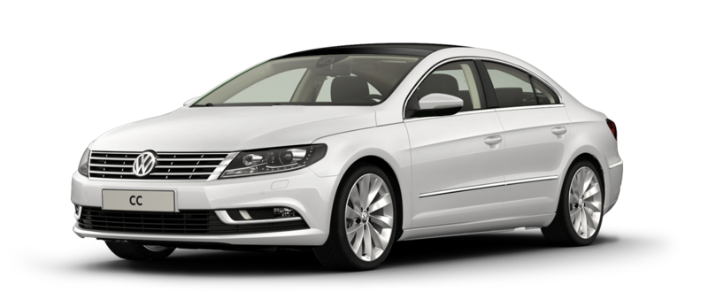
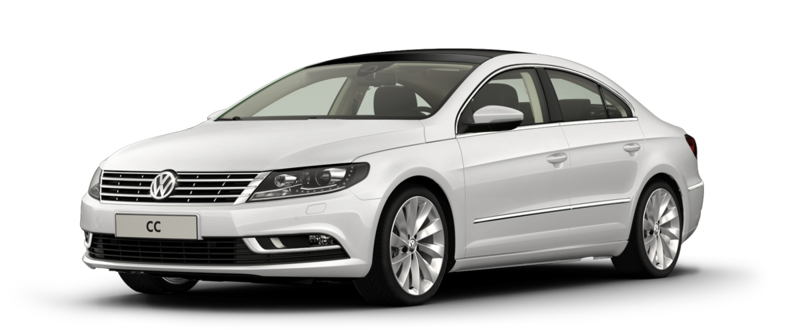

VW Passat B5 (1996-2005) este cunoscut pentru fiabilitatea motorului 1.9 TDI, confort și spațiu generos. Ideal pentru drumuri lungi și kilometri mulți.
Motorizări: Diesel și benzină, 1.6-2.8L. Reputație: Rezistent, economic, preferat de navetiști. Dotări: ABS, climatizare, scaune încălzite (opțional), ESP.
Passat-ul e alegerea celor care vor să ajungă mereu la destinație.
 
